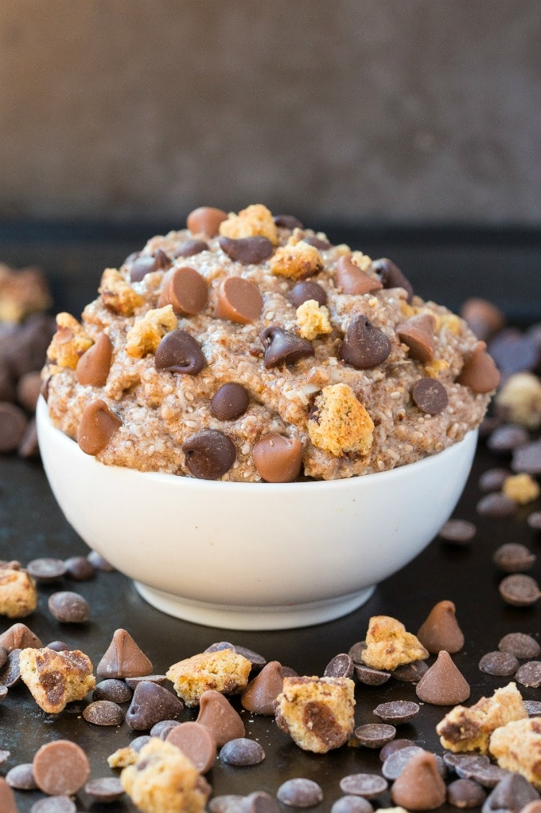

Keto Oatmeal

"A simple, tasty, no BS, overnight oatmeal for Paleo-heads and Vegans alike."
This overnight success can be made with just 4 ingredients, and practically no cooking. Best part, you can customize it however you like and even add chocolate chips to it!
Steps:
- Add your dry ingredients to a small mixing bowl and mix them well.
- Add half a cup of hot water or liquid of choice and mix it like mad. It should be EXTRA THICC, and then you can add your cold liquid of choice and mix it until it's even MORE THICC, and creamy.
- Add toppings and mix-ins of your choice.
- That's it.
Note: You can also add an extra 2 tablespoons of liquid and leave it overnight in a refrigerator.
Pro Tip: If you don't have shredded coconut or if the texture is too runny, try adding extra ground flaxseed.